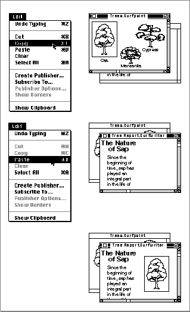
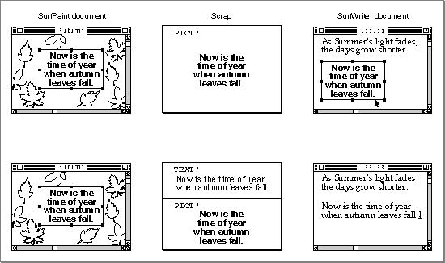
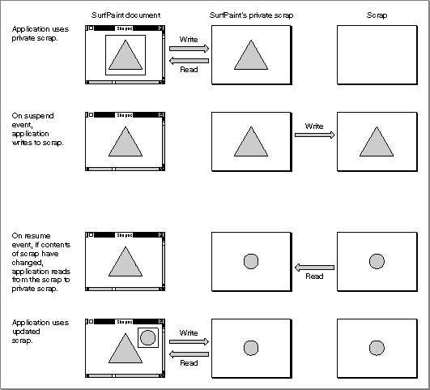

Introduction to the Scrap Manager
You can use the Scrap Manager toFigure 2-1 shows two documents from two applications (SurfPaint and SurfWriter) that the user currently has open. The user can select the data to copy from the SurfPaint document, choose Copy from the Edit menu, activate the SurfWriter document, then choose Paste from the Edit menu.
- copy and paste data within a document created by your application
- copy and paste data between different documents created by your application
- copy and paste data between documents created by your application and documents created by other applications
In the example shown in Figure 2-1, when the user chooses Copy, the SurfPaint application writes the selected data to the scrap. When the user chooses Paste, the SurfWriter application reads any data from the scrap and inserts the data at the current insertion point.
For each application, the Scrap Manager maintains a storage area to hold the last data cut or copied by the user. The area that is available to an application for this purpose is referred to as the scrap. The scrap can reside either in memory or on disk. All applications that support copy-and-paste operations read data from and write data to the scrap.
Whenever the user cuts or copies data, your application should write the data to the scrap (replacing the previous contents of the scrap); and whenever the user pastes data, your application should read the data from the scrap. Alternatively, your application can choose to use its own private scrap, and only write data to and read data from the scrap when necessary. If you use a private scrap, you must copy the data from your private scrap to the scrap upon receiving a suspend event. Upon receiving a resume event you should determine whether the data in the scrap has changed and, if so, either immediately copy the data from the scrap to your private scrap or copy the data from the scrap to your private scrap when the user next chooses the Paste command.
Figure 2-1 Copying and pasting data between two applications using the scrap

You use the Edit menu commands Cut, Copy, and Paste to support cutting, copying, and pasting of data within a document and between documents. Table 2-1 describes the actions your application should perform to support these three commands.You should implement the editing commands as described in Table 2-1 so that when the user chooses the Paste command--whether applied to the same document or another, in the same application or another--the data last operated upon by the user (cut or copied) can be inserted into the current document. Note that if your application implements the Clear command, in response to the Clear command your application should remove the data in the current selection but should not save the data into the scrap.
The nature of the data that the user can transfer varies between the application that the user copies data from and the application that the user pastes data into. The amount of information retained also depends on the capabilities of the applications supporting the copy-and-paste operation. For example, an application that allows a user to record and edit sounds may write a copied sound to the scrap both in
'snd 'and'TEXT'formats. Other applications choose which format to read from the scrap. A word processor that attempts to paste the sound data may not be able to read the sound in the'snd 'format but should be able to read the data in the'TEXT'format.You write data to the scrap using the standard formats that all Macintosh applications should support:
'PICT'and'TEXT'. These scrap format types are defined as follows:Your application must be able to write at least one standard format (
'TEXT': a series of ASCII characters'PICT': a QuickDraw picture, which is a saved sequence of drawing commands that can be played back with theDrawPictureprocedure'PICT'or'TEXT') to the scrap and should be able to read both. In addition, your application can support other optional popular scrap format types (such as'snd 'or'movv'). Your application can also write its own private format to the scrap, but must always write one of the standard formats as well.When your application requests data from the scrap, it must specify the scrap format type that the Scrap Manager should retrieve from the scrap. Your application typically requests its preferred scrap format first; if that format isn't available, it requests the data specifying another format type.
If you request a scrap format type that isn't in the scrap and the Translation Manager is available, the Scrap Manager uses the Translation Manager to attempt to convert the data of a scrap format type that does exist in the scrap into the scrap format type requested by your application. For example, if the SurfWriter application requests data from the scrap in the
'SURF'scrap format type, and the data in the scrap is available
in the format types'TEXT','PICT', and'SDBS'(SurfDB's private scrap format type), the Scrap Manager uses the Translation Manager to convert any one of the scrap format types'TEXT','PICT', or'SDBS'into the'SURF'scrap format type. The Translation Manager looks in the Extensions folder for a translator that can perform one of these translations. If such a translator is available (for example, a translator that can translate the'SDBS'scrap format type into the'SURF'scrap format type), the Translation Manager uses the translator to translate the data in the scrap into the requested scrap format type. If the translation is successful, the Scrap Manager returns to your application the data from the scrap in the requested scrap format type.Whenever possible, your application should write both of the standard data types to the scrap. For example, a graphics application, such as SurfPaint, can choose to write both
'PICT'and'TEXT'formats to the scrap when the user copies a picture consisting of text. Figure 2-2 shows a SurfPaint document and a SurfWriter document. The user copies, then pastes, a picture consisting of text. The SurfPaint application can choose to write only the'PICT'format; if it does so, then SurfWriter reads the data from the scrap in'PICT'format and inserts the data as a picture in the SurfWriter document. If the SurfPaint document writes both'PICT'and'TEXT'formats to the scrap, SurfWriter can choose which format to read. In this case, SurfWriter can choose to read the'TEXT'format of the data and insert the data as editable text into the document.Figure 2-2 Writing both standard formats to the scrap

The SurfPaint application uses an application-defined data type to describe the data in its documents. It uses this same format in its private scrap; this implementation works well as long as the user is working exclusively with SurfPaint documents. When the SurfPaint application receives a suspend event, indicating that another application is about to become the foreground process, SurfPaint copies the data from its private scrap to the scrap. SurfPaint writes data to the scrap in its own private format ('SFPN'), in'PICT'format, and if the picture contains text, it writes the data to the scrap in'TEXT'format as well. Upon receiving a resume event, SurfPaint determines whether the contents of the scrap have changed and if so, copies the new data from the scrap into its private scrap. Figure 2-3 shows how the SurfPaint application uses its own private scrap.Figure 2-3 Using a private scrap

Note that when your application receives a resume event, it should determine whether the contents of the scrap have changed. If your application uses a private scrap, either you can choose to copy the data from the scrap to your private scrap immediately or you can delay copying until the data is needed.If your application writes data to the scrap in more than one format, it should write the data in its order of preference. For example, the SurfPaint application writes its preferred scrap format type first (its own private format,
'SFPN'), then writes the data in'PICT'format, and then, if appropriate, writes the data in'TEXT'format. However, the size of the scrap is limited; therefore, when your application needs to write a large amount of data to the scrap and there isn't enough room in the scrap for both your application's private scrap format type and one of the standard formats, write the data in the standard format.As previously described, the Scrap Manager uses the Translation Manager (if it's available) to convert data in one scrap format type into another. If your application writes its own private scrap format type to the scrap, you may want to provide one or more translators that translate your private scrap format type into other format types. See the chapter "Translation Manager" in this book for information on how to write translators.
Subtopics
- The Clipboard
- Intelligent Cut and Paste